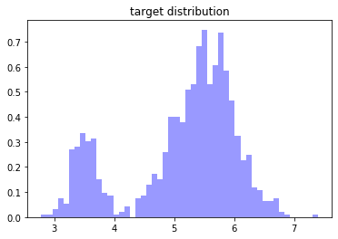
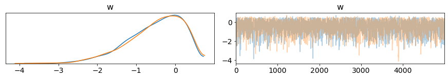
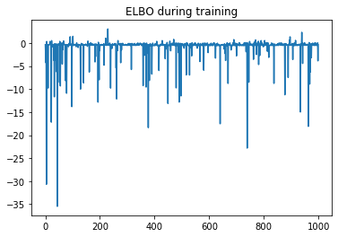
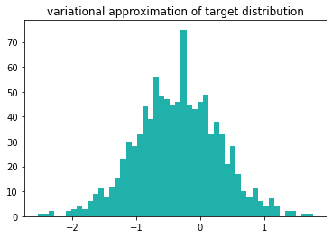

Lab 8: Variational Inference vs HMC#
This lab is adapted from AM207 (Harvard). Data files are in the book’s data/ folder. Worked solutions are collapsed: try each exercise before expanding them.
Problem Description: Compare HMC and Variational Inference for Difficult Posteriors#
In this lab, we will study how HMC and variational inference can struggle with difficult posteriors.
As an inspiration, check out the likelihood (and posterior) landscapes of Bayesian Neural Networks (BNNs) at:
Using the sample code provided below, build up complex distributions with multiple well separated modes as well as multiple modes that blend by defining them as mixtures of Gaussians (see how mixtures of Gaussians are helpful for modeling complex densities!).
Compare how well HMC and variational inference can capture your target distribution. Are there any adjustments to the design choices of the sampler and or VI algorithm that can improve performance (in order to really play around with the settings of HMC and BBVI you’ll need to use your own implementation - pymc3’s implementations have limited allowance for user adjustment)?
def plot_gaussian_mixture(w, mu, sd, S=100):
'''function for sampling form a mixture of gaussians'''
K = len(w)
components = np.random.choice(np.arange(K), replace=True, p=w, size=S)
samples = [np.random.normal(mu[z], sd[z]) for z in components]
return samples
#mixture weights
w = pm.floatX([.2, .8])
#mixture means
mu = pm.floatX([3.5, 5.5])
#mixture standard deviations
sd = pm.floatX([.2, .5])
#sample from the mixture and visualize
samples = plot_gaussian_mixture(w, mu, sd, S=1000)
plt.hist(samples, density=True, bins=50, color='blue', alpha=0.4)
plt.title('target distribution')
plt.show()

Auto-assigning NUTS sampler...
Initializing NUTS using jitter+adapt_diag...
Multiprocess sampling (2 chains in 2 jobs)
NUTS: [w]
Sampling 2 chains: 100%|██████████| 11000/11000 [00:03<00:00, 3121.91draws/s]
The number of effective samples is smaller than 25% for some parameters.

Average Loss = 0.78644: 100%|██████████| 10000/10000 [00:02<00:00, 3386.01it/s]
Finished [100%]: Average Loss = 0.7811


-0.3545650265571895
0.6606441067212657